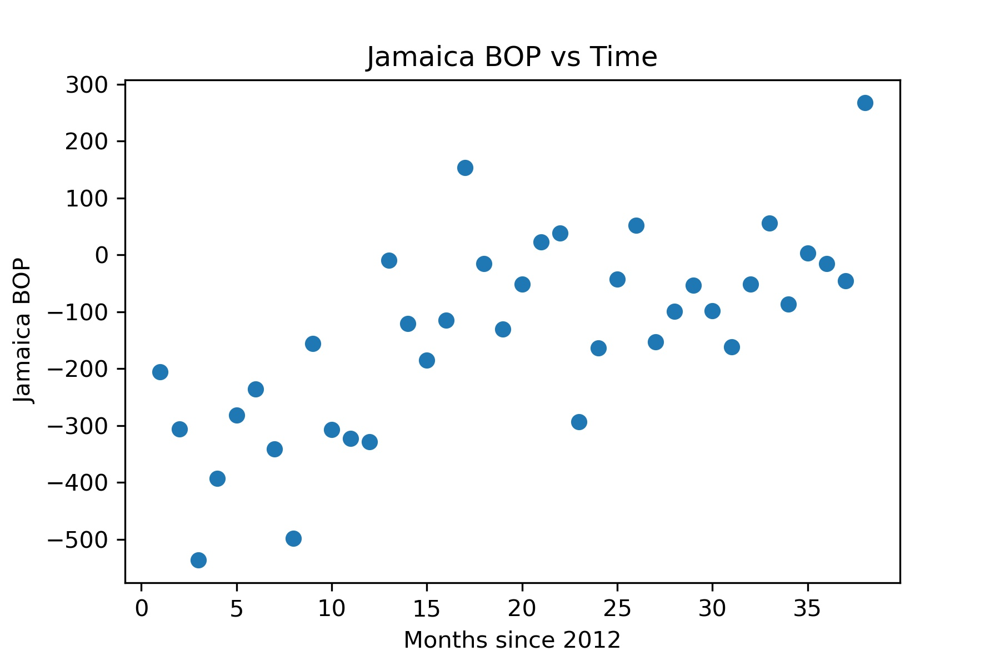
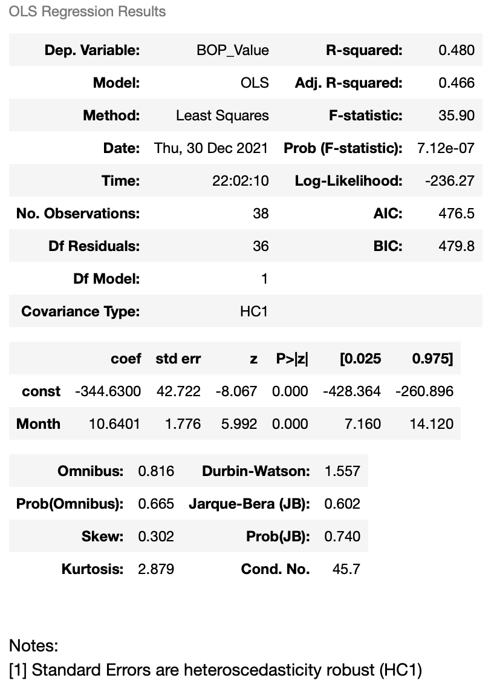
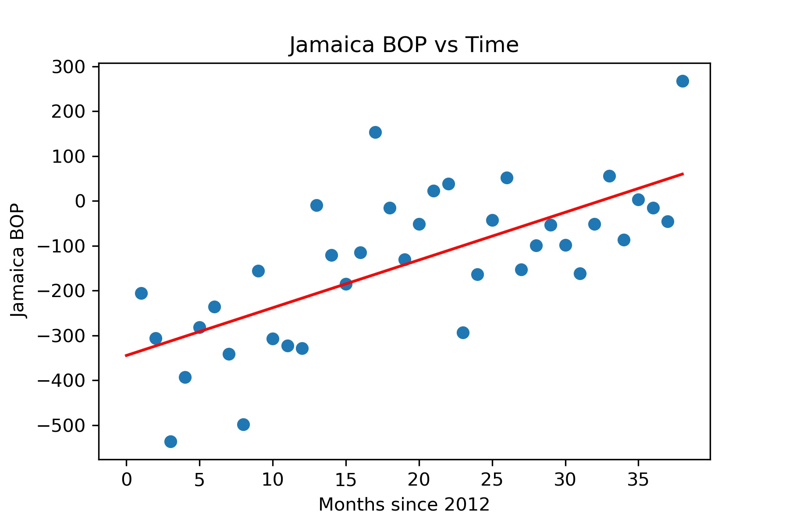
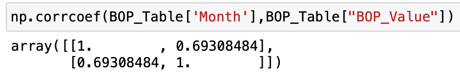
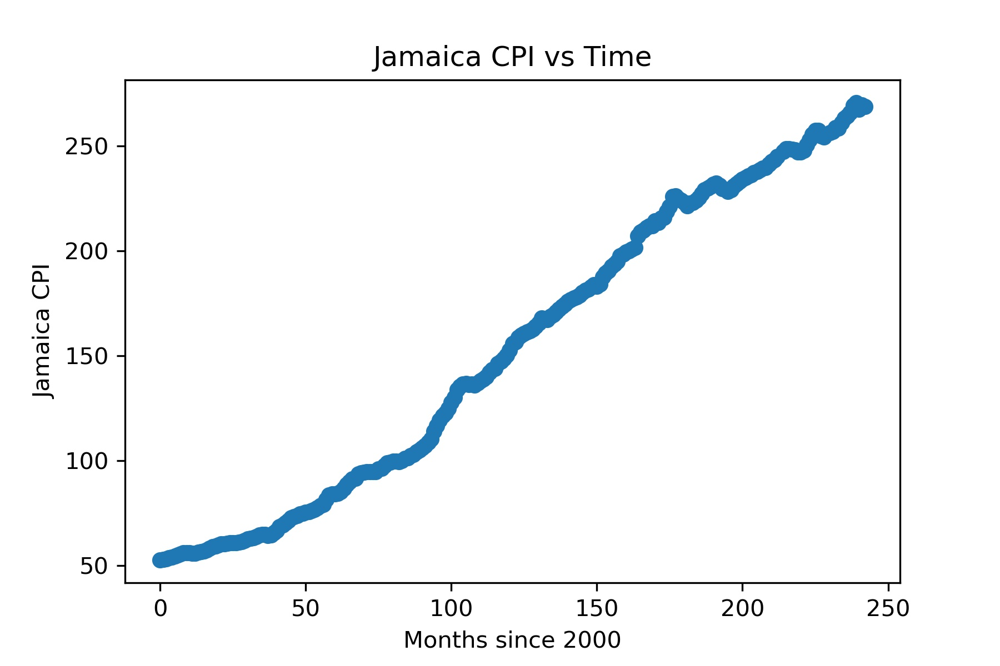
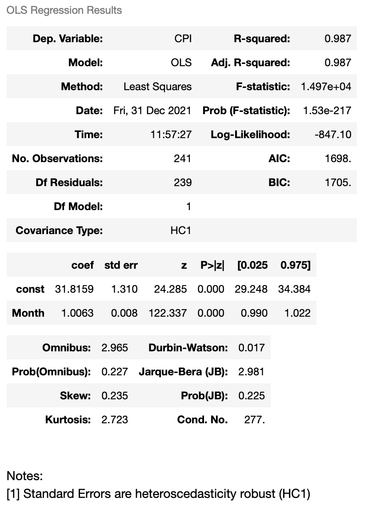
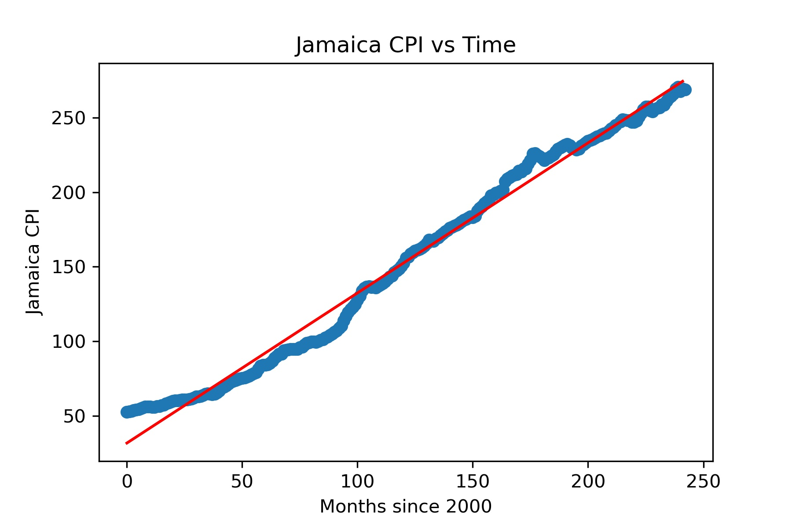
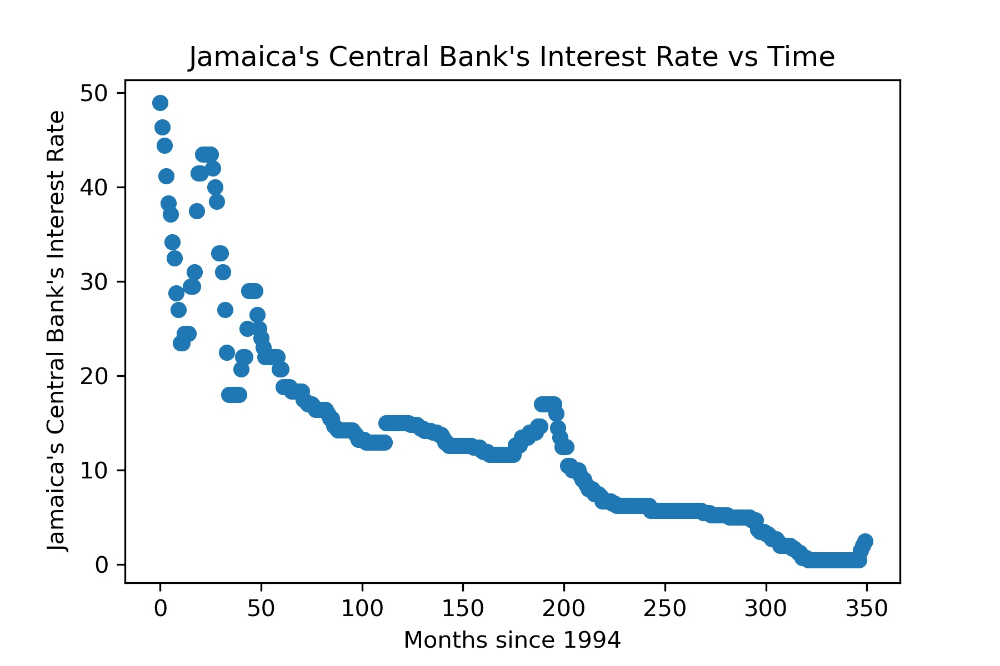

Jamaica: An Analysis
For this first project, I wanted to do a simple analysis of data using data gathered from an online source. In particular, this data was gathered from the Bank of Jamaica which is the central bank of Jamaica. Click here to visit the Bank of Jamaica's website to find a copy of the data.
This analysis looks at Jamaica's Balance of Payments from 2012 - 2021, Jamaica's Consumer Price Index from 2000 - 2020, and Jamaica's Central Bank's interest rate from 1994 - 2021.
You can view the code of the Jupyter notebook that I used here.
1) Balance of Payments
First off, this graph below shows the Balance of Payments each month in Jamaica over a time period from 2012 to 2021. One obvious thing to notice right at the start is that there appears to be a fairly linear trend upwards in the data. I will investigate this fact first with a linear regression.
I regress Balance of Payments on Months. The reason for this regression is not to attempt to find any causal relationship between Months and Balance of Payment but instead to find the line of best fit for the data.
I use the regression line to estimate the line of best fit. The regression results yield the estimate of: BOP = -344.64 + 10.6401*Month. The graph below shows this line of best fit graphed on the original scatterplot.
The result of the regression shows that for every month since 2012, on average, there is approximately a 10.6401 increase in BOP (measured in Millions of USD). Overall, to me, it is interesting to see that Jamaica has had a very strong and constant linear relationship. The economic/political reasons behind why Jamaica has turned from a nation with a constantly negative BOP to a country that seems to be trending towards a constantly positive BOP is a discussion for a later date.
As a brief aside, I wanted to check the validity of a concept that I remember from my Econometrics course. When a regression is bivariate, the R-squared of the regression should be equal to the correlation of the two variables squared. As can be seen from the regression, the R-squared of the regression is .480. The image below shows the correlation between BOP and Months.
This shows the correlation between Month and BOP to be approximately .693. To confirm the validity of the fact that in a bivariate regression, R-squared is the square of correlation, you can confirm on your own calculation device that .693 squared is indeed .480.
2) Consumer Price Index
This graph shows the CPI of Jamaica over time. For reference, this graph is indexed at month 83. This means that the CPI is 100 at month 83.
The graph shows a fairly constantly increasing rate of inflation in Jamaica. To estimate the slope of the line, which would be equal to the average rate of inflation over the time period, I will run another regression similar to the BOP example. Also, I will draw the line of best fit over the scatterplot like BOP example.
 Visually, the fact that Line of Best Fit, actually fits the data very closely shows that there is a non-volatile and constant increase of inflation in Jamaica, in general. This fact can also be seen in the regression, since the R-squared value is .987 meaning that a straight OLS regression line fits the data very accurately.
In fact, we can use the regression to estimate the rate of inflation in Jamaica. The regression shows that the coefficient for the "Month" variable is 1.0063. This means that, on average and all else being equal, Jamaica has an inflation rate of 1.0063% per month, indexed at the 83rd month.
After looking online at more information about Jamaica's inflation rate, it appears that Jamaica has not always had such a stable inflation rate as the graphs above has shown since 2000. Below is a graph of Jamaica's inflation rate since 1986. You can click on the graph to see the original source on Statista.

Find more statistics at Statista
As can be seen, since 2000, Jamaica has had fairly low and stable inflation which is in agreement with the earlier graphs above. However, during the 1990s, Jamaica experienced extremeley fast and volatile inflation.
This article provides a deeper explanation of the history of Jamaica's inflation, however, in summary, Jamaica experienced extreme inflation in the 1990s due to the liberlization of Jamaica's economy and the end of socialist economic policy and a shift towards the free market. An in-depth discussion of the reasons behind Jamaica's inflation rates, however, is not the purpose of this project, so I will move on.
3) Central Bank's Interest Rate
Briefly, I wanted to look at the Bank of Jamaica's interest rate. The graph below shows the interest rate since 1994.
Most interestingly from this graph, you can see how the shape of the graph of Jamaica's central bank's interest rate tracks very closely with the shape of Jamaica's CPI. Most notably, you can see the extremely high and volatile interest rates in the 1990s and then a long and stable decrease in the interest rate in the 2000s. One notable exception is the little spike around 2008, where inflation reached 22% and the central bank's interest rate followed closely with an interest rate around 20%.
Summary
The purpose of this analysis was not necessarily to find something profound or extremeley interesting, but instead use this analysis as an exercise in graphing, simple regression and interpretation, and making connections between data and real life.
First, we discovered that Jamaica has had a trend of an increasing BOP value over time. In 2012, Jamaica had a deeply negative BOP, but ever since has increased their BOP in the positive direction by 10.6401 Million USD each month. This has led to the point where Jamaica has reached a near-negative BOP value.
Second, we looked at Jamaica's CPI from 2000 to 2020. Visually, it is almost remarkable how linear and stable Jamaica's inflation rate has been especially when comparing it to Jamaica's historical inflation rate. Regression analysis shows that Jamaica has averaged a 1.0063% inflation per month ever since 2000. We then saw Jamaica's historical inflation rate and noticed a huge spike in inflation up to 77% in the early 1990s.
Finally, we looked at Jamaica's central bank's interest rate and compared the shape of the graph of the interest rate with the shape of the graph of Jamaica's inflation rate. There, as one would expect, is a strong correlation between the two graphs.